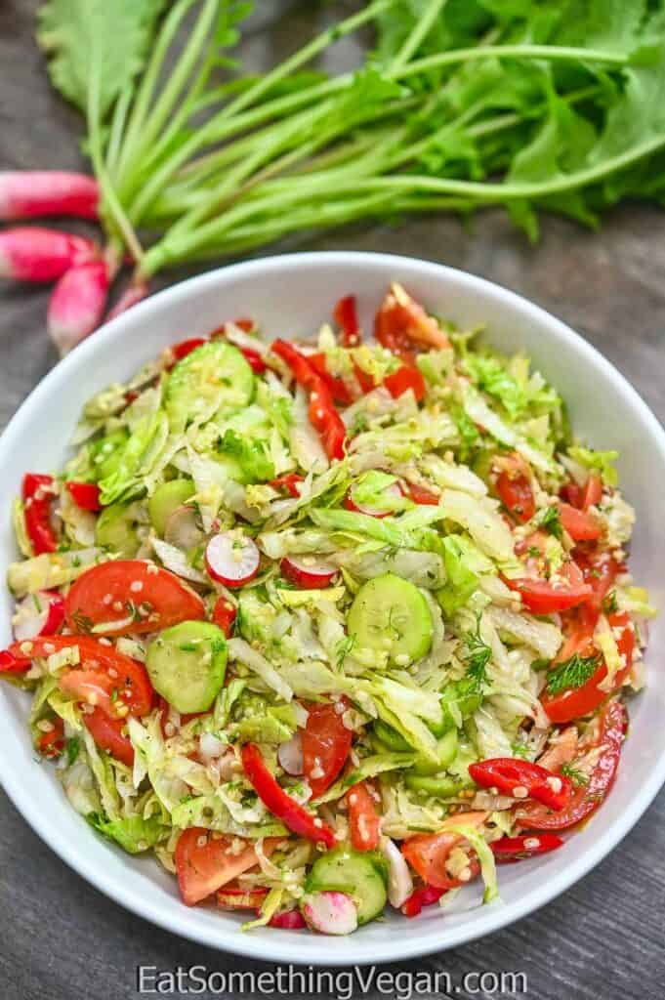

Summer salad

Description
This is a simple, yet fancy looking dish. Could be used to possibly make an impression on your potential partner. In that case, though, I recommend not using the onion
A little disclamer - the picture does not represent this dish fully. I stole this picture from the internet. I don't have a camera myself, but the real dish is much more colorful
Ingredients
- Ice lettuce
- Red onion (optional)
- Cucumber
- Cherry tomatos
- Olive oil
- Feta cheese
- Spices
Steps
- Cut red onion in little pieces
- Tear ice lettuce with fingers
- Slice cucumber longways in half and cut in slices (you should get semi circles)
- Cut cherry tomatos in half
- Cut feta cheese in cubes
- Put everything in a bowl
- Add 4 teaspoons of olive oil
- Add your favorite spices
- Mix everything!
- Enjoy your summer meal!